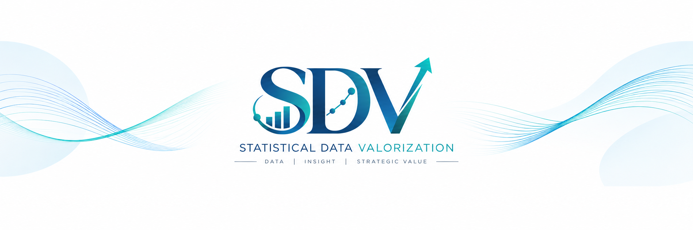

SDV 이야기 제1편 — AI가 분석하는 시대, 통계학자는 무엇을 해야 하는가
여론조사의 숫자 너머에서 찾는 데이터의 가치
오랫동안 나는 데이터를 분석하고, 결과를 해석하고, 그 의미를 보고서로 전달하는 일을 해왔다. 데이터 속에서 쉽게 드러나지 않는 특징을 찾아내고 설명하는 능력은 통계학자로서 나의 전문성이었다.
그런데 AI를 활용하면서 그 전문성을 바라보는 생각이 흔들리기 시작했다. 분석과 보고서 작성은 AI만으로도 충분하지 않은가 하는 생각이 들었다. 계산이나 코드 작성만의 문제가 아니었다. 결과를 해석하고, 데이터에서 인사이트를 찾아내는 일까지 AI가 수행한다면, 나의 역할은 어디에 남는가.
솔직히 말하면, 통계학자로서 쌓아온 나의 능력과 영역이 사라져 버린 듯한 느낌이었다. 편리한 도구를 만났다는 반가움만으로는 설명할 수 없는 변화였다. 그 도구가 내가 전문성이라고 믿어온 영역 안으로 들어오고 있었다.
통계적 데이터 가치화, SDV에 대한 나의 고민은 여기에서 시작되었다.
AI가 하지 못하는 일을 찾으면 되는가
나는 이 고민을 AI와도 나누었다. AI와 함께 일한다면 통계학자인 내가 무엇을 해야 하는지 물었다.
돌아온 답에는 현장의 맥락을 이해하고, 중요한 가치를 판단하며, 분석을 실제 의사결정에 연결해야 한다는 내용이 있었다. 그러나 쉽게 수긍하기 어려웠다. 현장을 이해하는 일은 해당 분야 전문가가 더 잘할 수 있다. 정책의 우선순위를 정하는 일도 통계학자의 고유한 영역은 아니다.
질문을 설계하고 결과를 검증하면 된다는 답도 충분하지 않았다. AI 역시 그 과정에 참여할 수 있기 때문이다.
그렇다면 통계학자의 역할을 AI가 아직 하지 못하는 일에서만 찾아야 할까. 나는 질문의 방향을 바꾸기로 했다.
AI가 어디까지 할 수 있는가보다, AI와 함께 일하는 나는 데이터로 무엇을 더 이루려 하는가.
그 질문을 구체적으로 보여줄 수 있는 사례가 여론조사다.
지지율이 같으면 여론도 같은가
가상의 여론조사를 생각해 보자. 지난 조사에서 지지율이 40%였고, 이번 조사에서도 40%가 나왔다. 발표되는 숫자만 보면 변화가 없다.
그러나 같은 40% 안에는 서로 다른 상황이 있을 수 있다.
기존 지지자 대부분이 그대로 지지를 유지했을 수 있다. 반대로 상당수가 지지를 철회했지만, 그만큼 새로운 지지자가 들어왔을 수도 있다. 어떤 집단에서는 지지율이 오르고 다른 집단에서는 내려가 전체 비율이 유지되었을 수도 있다.
첫 번째는 비교적 안정적인 상태이고, 두 번째는 활발한 이동이 일어나는 상태다. 세 번째는 집단별 변화가 전체 수치 안에서 상쇄되는 상황이다. 전체 비율이 같다고 해서 여론의 내부까지 같다고 말할 수는 없다.
물론 발표된 지지율만 보고 어느 상황인지 알아낼 수는 없다. 서로 다른 사람을 조사한 두 차례의 조사만으로 개인별 지지 이동을 직접 확인할 수도 없다. 같은 사람을 다시 조사하는 패널설계가 필요할 수 있고, 그 경우에도 조사에서 이탈한 사람과 응답의 불안정성을 검토해야 한다.
변화의 이유를 알고 싶다면 그 이유를 살펴볼 수 있는 문항도 필요하다. 측정하지 않은 내용을 분석기법이나 AI가 사실로 만들어낼 수는 없다.
바로 여기에서 통계학자의 기여가 시작된다. 숫자에 그럴듯한 이야기를 붙이는 것이 아니라, 알고 싶은 것을 실제로 확인할 수 있도록 자료와 분석을 설계하는 일이다.
표본설계와 추론에서 끝나지 않는 통계학
대표성 있는 표본을 설계하고 적절하게 추정하는 일은 여론조사의 중요한 기반이다. 그러나 통계학자의 기여가 그 단계에서 끝날 필요는 없다.
여론의 변화를 이해하려면 먼저 구분해야 할 것이 있다. 관측된 차이가 실제 의견의 변화인지, 응답자 구성의 차이인지, 조사 방식이나 질문 표현의 차이인지 살펴야 한다. 집단을 세분할수록 표본이 작아지고 결과가 불안정해질 수 있다는 점도 고려해야 한다.
이 작업에는 복잡한 분석을 많이 하는 것보다 정확한 질문이 중요하다.
우리가 확인하려는 것은 전체 지지 수준인가, 개인의 의견 이동인가. 발견한 차이는 어느 정도 확실한가. 같은 결과가 다음 조사에서도 유지되는가. 현재 자료로 말할 수 없는 것은 무엇인가.
통계학자는 정치적 상황에 대한 해설을 대신하는 사람이 아니다. 정치적 해석에 앞서, 어떤 설명이 데이터의 뒷받침을 받고 어떤 설명은 아직 추측에 머무는지 구분하는 데 기여할 수 있다.
AI는 이 과정에서도 분석과 대안 검토를 도울 수 있다. 중요한 것은 누가 계산했는지가 아니라, 무엇을 확인하도록 설계했으며 그 결론을 어떤 근거로 뒷받침할 수 있는가이다.
숫자에서 이해로, 이해에서 활용으로
그렇다면 여론의 내부 구조를 분석하면 그것으로 데이터 가치화가 완성되는가.
그렇지는 않다. 분석표가 늘어나고 흥미로운 인사이트가 추가되었다는 것만으로 실제 가치가 만들어졌다고 말하기는 어렵다. 그 결과가 누구의 어떤 이해와 판단에 도움이 되었는지까지 물어야 한다.
지지율이 같아도 내부의 이동은 클 수 있다는 사실을 확인했다면, 언론과 시민이 '지지율 유지'를 곧바로 '여론의 안정'으로 받아들이는 오류를 줄일 수 있다.
정책에 대한 찬반과 함께 정책 이해도, 관련 경험, 우려 사항을 적절하게 조사했다면, 단순한 찬반 비율을 넘어 어떤 쟁점을 더 설명하고 논의해야 하는지 살펴볼 수 있다. 다만 서로 관련되어 있다는 사실과 원인이라는 주장은 구분해야 한다.
이때 여론조사는 어느 쪽이 앞서는지 보여주는 자료를 넘어, 사회가 무엇을 이해하고 무엇을 우려하는지 검토하는 근거가 된다.
그 근거가 보도에 어떻게 반영되었는지, 공론장의 오해를 줄였는지, 후속 조사와 정책 검토에 사용되었는지를 확인해야 한다. 활용되지 못했다면 이유를 살펴 다음 조사와 전달 방식을 개선해야 한다.
데이터의 가치는 결과를 발표하는 순간 자동으로 생기는 것이 아니라, 그 결과가 이해와 판단을 개선하는 과정에서 구체화된다.
내가 SDV로 하려는 일
나는 이러한 방향을 통계적 데이터 가치화, SDV(Statistical Data Valorization)라는 이름으로 제안한다.
SDV는 기존 통계학에 없던 분석기법을 발명했다는 주장이 아니다. 여론 전문가들이 데이터의 가치를 모른다거나, 통계학자만이 그 가치를 만들어낼 수 있다는 주장도 아니다.
핵심은 통계적 전문성을 어디까지 연결할 것인가에 있다. 신뢰할 수 있는 데이터를 생산하고 정확한 분석을 수행하는 데서 출발하되, 그 결과가 무엇을 이해하게 하고 어떤 판단에 사용되며 실제로 어떤 도움이 되었는지까지 연결하자는 것이다.
그 과정에서 통계학자는 분야 전문가를 대신하지 않는다. 분야 전문가는 맥락을 제공하고, 통계학자는 검증 가능한 근거를 구성하며, 결과를 사용하는 사람은 자신의 목적과 책임 아래 판단한다. 역할은 겹칠 수 있고, 서로 협력해야 한다. AI 역시 이 과정의 여러 작업에 참여할 수 있다.
그러므로 통계학자의 차별성은 다른 사람이 절대로 할 수 없는 일을 소유하는 데서만 나오지 않는다. 자신이 축적한 전문성과 AI를 결합해, 이전보다 더 신뢰할 수 있고 실제로 쓸모 있는 결과를 만들어내는 데서도 나올 수 있다.
처음의 상실감에 대한 답을 완전히 찾았다고 말할 수는 없다. 다만 내가 앞으로 무엇을 지향해야 하는지는 조금 더 분명해졌다.
AI보다 분석을 빨리하는 사람이 되려는 것이 아니다. AI가 남겨둔 좁은 영역을 지키려는 것도 아니다. AI의 능력을 활용하면서, 데이터가 실제로 쓰일 수 있는 근거가 되고 그 근거가 더 나은 판단으로 이어지도록 일하려는 것이다.
"우리는 숫자를 발표하는 데서 멈출 것인가,
그 숫자로 사회를 더 잘 이해하도록 도울 것인가."
분석을 넘어 가치로 나아간다는 것은, 나에게 바로 이런 의미다.
